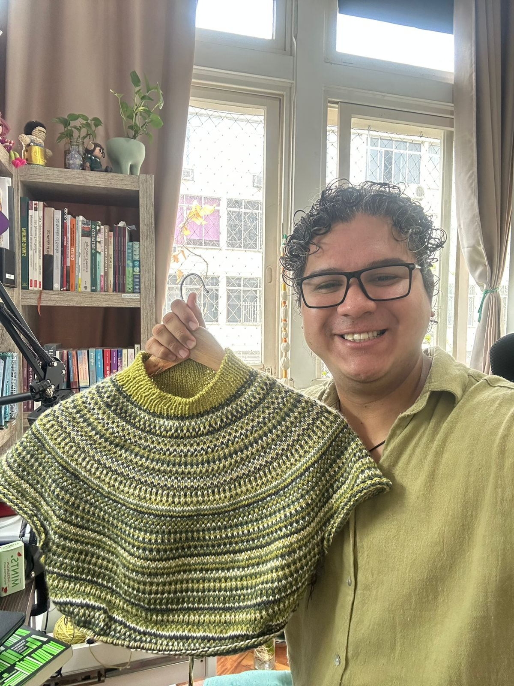
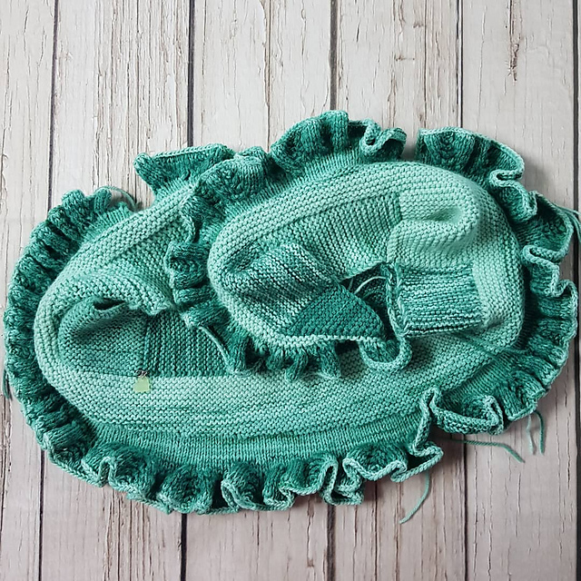
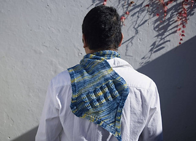
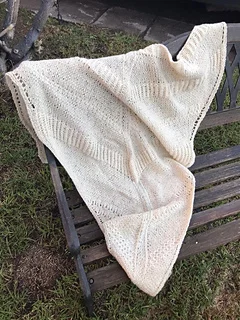
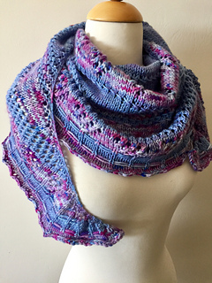
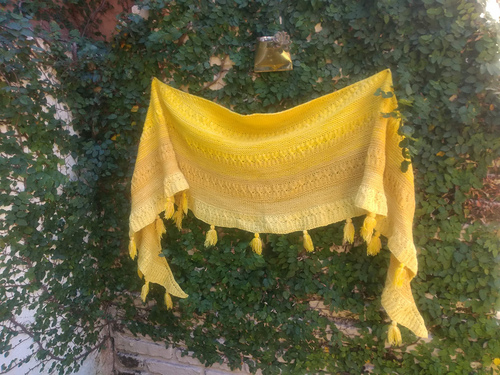

Tecelao, designer e criador textil
Crio xales, meias e pecas com inspiracao latino-americana. Ja colaborei com mais de 15 marcas e ensinei a arte de tricotar em 4 paises.
Minha historia textil

Meu nome e Winelvi, sou tecelao, designer e criador textil. Nasci em Caracas, Venezuela, e desde pequeno me interessei por artesanato e design.
Desde que peguei minhas primeiras agulhas, soube que o tricô seria minha linguagem. Criei xales, meias e pecas com inspiracao latino-americana, misturando tradicao e criatividade.
Ao longo dos anos trabalhei com marcas incriveis, criei pecas que contam historias e ensinei muitas pessoas a arte de tricotar.
Cada ponto tem um proposito, e cada design e uma aventura.
Marcas com as quais ja trabalhei
| Marca | Funcao | Periodo |
|---|---|---|
| Tex Andes Lanas | Consultor tecnico, influenciador e designer | 2023 - atualmente |
| Budetex | Consultor tecnico, imagem de marca e designer | 2019 - 2023 |
| Tramando Suenos | Consultor tecnico e designer | 2023 |
Designs que contam histórias
Inspiração latino-americana em cada ponto. Explore meus designs e escolha a próxima história que você vai tecer.

Xale Tepuy ver receita
Estola Brasil ver receita
Kerepakupai Venaa ver receita
Alma Llanera ver receita Tierra de Tejedores
ver receita
Tierra de Tejedores
ver receita

Xale Sol Zuliano ver receitaOnde voce ja me viu
Em livros e publicacoes
- Hombres tejedores Livro
- Tramando Latinoamerica Livro